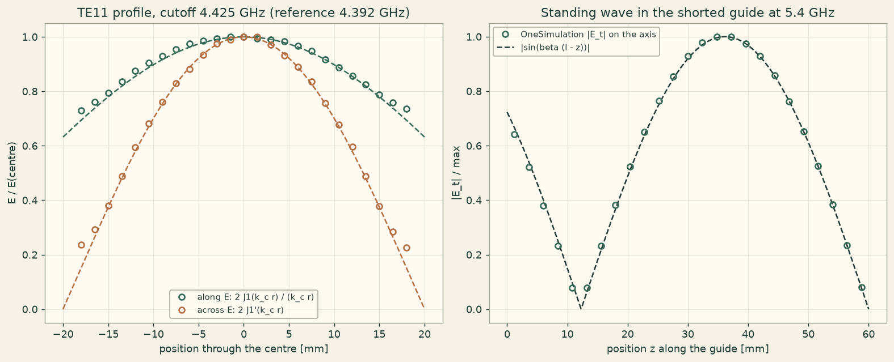
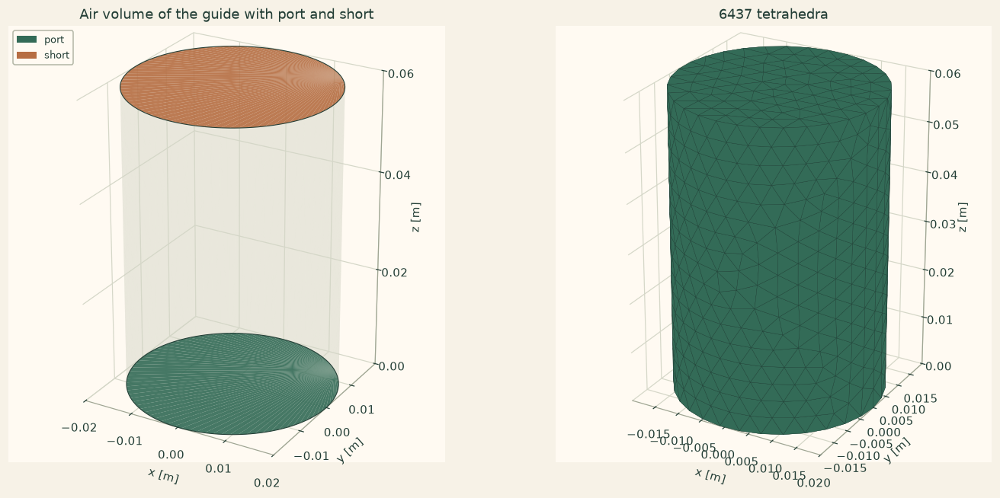

Docs › Examples › TE11 and TM01 modes of a circular waveguide
Electromagnetic waves · 3D
TE11 and TM01 modes of a circular waveguide
The lowest modes of a circular waveguide, graded against the Bessel-root cutoff frequencies.

What it computes
OneSimulation solves the frequency-domain Maxwell equations in a shorted circular guide with numerical TE and TM port modes. The geometry is read from a STEP file with named faces; the script that builds it comes with the notebook.
What it checks
The TE11 and TM01 cutoffs c p/(2 pi a) are within about 0.9 %; the mode profile and the axial standing wave agree within a few percent.
Geometry
The notebook starts at the import of the CAD file circular_waveguide_te11_cutoff.step: STEP (AP242), readable by any CAD program, with the names of the faces that the boundary conditions use. Put it next to the notebook.

The geometry script
The script circular_waveguide_te11_cutoff_geometry.py builds the geometry with the CAD objects of OneSimulation and writes the file. Change a dimension there, run it, and run the notebook again.
"""Geometry of the OneSimulation example "TE11 cutoff of a circular waveguide".
Builds the air volume of the guide, radius 20 mm and 60 mm long, with the CAD objects of
OneSimulation and writes circular_waveguide_te11_cutoff.step. The file names three face groups:
`port` (the feed disk at z = 0), `short` (the far end) and `walls` (the cylindrical wall).
"""
from onesim.cad.d3 import Cylinder
guide = Cylinder(radius=0.020, length=0.060)
faces = guide.boundaries
guide = guide.grouped(
port=faces.bottom, short=faces.top, walls=faces.all - faces.bottom - faces.top
)
guide.save("circular_waveguide_te11_cutoff.step")The notebook
The complete notebook, cell by cell. Run it to produce the figures and the comparison printout.
An air-filled circular waveguide of radius \(a\) is fed through a waveguide port on its bottom disk (\(z=0\)) and terminated by a perfectly conducting short at \(z=\ell\); the cylindrical wall is a perfect electric conductor. The port mode is not prescribed analytically: OneSimulation solves the transverse eigenvalue problem on the meshed port cross-section and uses its first TE eigenmode (the fundamental TE11 mode) as the excitation.
The air volume comes from the CAD file circular_waveguide_te11_cutoff.step with the face groups port, short and walls; the script circular_waveguide_te11_cutoff_geometry.py builds it with the CAD objects of OneSimulation. The frequency-domain Maxwell equations are solved with Nédélec (H(curl)) elements of order 2 on a tetrahedral mesh:
Reference. The cutoff wavenumbers of a circular guide are zeros of Bessel functions, \(k_c=p'_{nm}/a\) for TE\(_{nm}\) (zeros of \(J_n'\)) and \(k_c=p_{nm}/a\) for TM\(_{nm}\) (zeros of \(J_n\)):
TE11 is the fundamental mode, TM01 the first higher mode, and the guide is single-moded between the two cutoffs. The TE11 electric field through the centre of the guide follows \(2J_1(k_c r)/(k_c r)\) along the polarisation direction and \(2J_1'(k_c r)\) perpendicular to it. With \(\beta=\sqrt{k_0^2-k_c^2}\) the shorted guide carries the standing wave \(|\mathbf{E}_t(z)|\propto|\sin\beta(\ell-z)|\) on its axis.
import numpy as np
from onesim.cad.exchange import load
from onesim.materials import VACUUM_PERMEABILITY, VACUUM_PERMITTIVITY
from onesim.materials.electromagnetic import IsotropicElectromagneticMaterial
from onesim.meshing import TetrahedralMesher
from onesim.numerics import Numerics
from onesim.numerics.fem import FiniteElement, Nedelec
from onesim.numerics.linear import ComplexSparseDirect
from onesim.physics.electromagnetics import (
FrequencyDomainMaxwell,
NumericalWaveguideMode,
PerfectElectricConductor,
WaveguidePort,
)
from onesim.simulation import Problem, Simulation
from onesim.visualization import plots, theme
from scipy.special import jv, jvp
theme.set()Geometry and mesh
With a radius of 20 mm the TE11 mode cuts off at about 4.39 GHz and TM01 at 5.74 GHz.
guide = load("circular_waveguide_te11_cutoff.step")
faces = guide.boundaries
a, length = guide.size[0] / 2, guide.size[2]
mesh = TetrahedralMesher(target_size=0.004).generate(guide)
fig = plots.figure(1, 2, size=(13, 5.5))
plots.geometry(
guide,
selection={"port": faces.port, "short": faces.short},
labels=False,
title="Air volume of the guide with port and short",
ax=fig[0],
)
plots.mesh(
mesh,
groups=("all",),
legend=False,
title=f"{mesh.cell_count} tetrahedra",
ax=fig[1],
)
plots.show()Model
The guide is driven at 5.4 GHz, inside the single-mode band, with the first TE port mode. A second solve at 6.5 GHz, above the TM01 cutoff, binds the first TM port mode.
def solve(frequency, mode):
"""Driven field of the shorted guide and the port eigenmode that feeds it."""
model = FrequencyDomainMaxwell(
domain=guide.volume,
frequency=frequency,
material=IsotropicElectromagneticMaterial(),
phasor_convention="exp(-i*omega*t)",
amplitude_convention="peak",
)
problem = Problem(
name="Circular waveguide with a short",
geometry=guide,
physics=(model,),
boundary_conditions=(
WaveguidePort(
boundary=faces.port, physics=model, mode=mode, incident_power=1.0
),
PerfectElectricConductor(boundary=faces.walls | faces.short, physics=model),
),
)
numerics = Numerics(
spatial=FiniteElement(element=Nedelec(order=2)),
linear_solver=ComplexSparseDirect(),
)
result = Simulation(
problem=problem, mesh=mesh, numerics=numerics
).solve_stationary()
return (
result.field(model.electric_field),
result.field(model.absorbed_power_density),
result.operators[model.model_id].ports[0][1],
)
frequency = 5.4e9
electric_field, absorbed_power, te11 = solve(frequency, NumericalWaveguideMode("TE"))
tm01 = solve(6.5e9, NumericalWaveguideMode("TM"))[2]Comparison with the Bessel-function solution
Each bound port mode exposes its cutoff frequency and its transverse electric field. TE11 is linearly polarised at the centre; the mesh picks the polarisation direction of the degenerate pair, so it is read off the computed mode. The driven field is sampled along the guide axis.
c0 = 1.0 / np.sqrt(VACUUM_PERMEABILITY * VACUUM_PERMITTIVITY)
kc = 1.841183781 / a
cutoff_te11, cutoff_tm01 = c0 * kc / (2 * np.pi), c0 * 2.404825558 / (2 * np.pi * a)
beta = np.sqrt((2 * np.pi * frequency / c0) ** 2 - kc**2)
centre = te11.electric_field(np.zeros((1, 3)))[0]
polarisation = centre / np.linalg.norm(centre)
perpendicular = np.array([-polarisation[1], polarisation[0], 0.0])
r = np.linspace(-0.9 * a, 0.9 * a, 25)
along = te11.electric_field(np.outer(r, polarisation)) @ polarisation
across = te11.electric_field(np.outer(r, perpendicular)) @ polarisation
along, across = (along / along[len(r) // 2]).real, (across / across[len(r) // 2]).real
fine_r = np.linspace(-a, a, 300)
x, fine_x = (np.where(np.abs(kc * s) > 1e-12, kc * s, 1e-12) for s in (r, fine_r))
z = np.linspace(0.02 * length, 0.98 * length, 25)
axis_field = electric_field.evaluate(
np.column_stack((np.zeros_like(z), np.zeros_like(z), z))
)
transverse = np.hypot(np.abs(axis_field[:, 0]), np.abs(axis_field[:, 1]))
standing_wave = np.abs(np.sin(beta * (length - z)))
absorbed = absorbed_power.integrate()
print(
f"TE11 cutoff: computed {te11.cutoff_frequency / 1e9:.4f} GHz, reference {cutoff_te11 / 1e9:.4f} GHz, "
f"deviation {100 * abs(te11.cutoff_frequency / cutoff_te11 - 1):.2f} %"
)
print(
f"TM01 cutoff: computed {tm01.cutoff_frequency / 1e9:.4f} GHz, reference {cutoff_tm01 / 1e9:.4f} GHz, "
f"deviation {100 * abs(tm01.cutoff_frequency / cutoff_tm01 - 1):.2f} %"
)
print(
f"TE11 mode profile against 2 J1(x)/x and 2 J1'(x): largest deviation "
f"{max(np.max(np.abs(along - 2 * jv(1, x) / x)), np.max(np.abs(across - 2 * jvp(1, x)))):.3f} of the centre value"
)
print(
f"standing wave against |sin(beta (l - z))|: largest deviation "
f"{np.max(np.abs(transverse / transverse.max() - standing_wave / standing_wave.max())):.3f} of the peak, "
f"|E_z|/|E_t| = {np.max(np.abs(axis_field[:, 2])) / transverse.max():.3f}"
)
print(
f"absorbed power in the lossless guide: {absorbed.value:.3e} {absorbed.unit} (incident 1 W)"
)Figure
fine_z = np.linspace(0, length, 300)
fig = plots.figure(1, 2, size=(12, 4.8))
plots.line(
points={
"along E: 2 J1(k_c r) / (k_c r)": (1e3 * r, along),
"across E: 2 J1'(k_c r)": (1e3 * r, across),
},
reference={
"along E: 2 J1(k_c r) / (k_c r)": (1e3 * fine_r, 2 * jv(1, fine_x) / fine_x),
"across E: 2 J1'(k_c r)": (1e3 * fine_r, 2 * jvp(1, fine_x)),
},
xlabel="position through the centre [mm]",
ylabel="E / E(centre)",
title="TE11 profile at the port",
ax=fig[0],
)
plots.line(
points={"|E_t| on the axis": (1e3 * z, transverse / transverse.max())},
reference={
"|sin(beta (l - z))|": (1e3 * fine_z, np.abs(np.sin(beta * (length - fine_z))))
},
xlabel="position z along the guide [mm]",
ylabel="|E_t| / max",
title=f"Standing wave in the shorted guide at {frequency / 1e9:.1f} GHz",
ax=fig[1],
)
plots.show()Going further
Change the radius in circular_waveguide_te11_cutoff_geometry.py and write the STEP file again: both cutoffs scale with \(1/a\). Ask for NumericalWaveguideMode("TE", order=3) above 7.3 GHz to bind the TE21 mode and compare it with \(p'_{21}=3.0542\), or refine target_size to tighten the cutoff comparisons, which converge quadratically with the port mesh size.